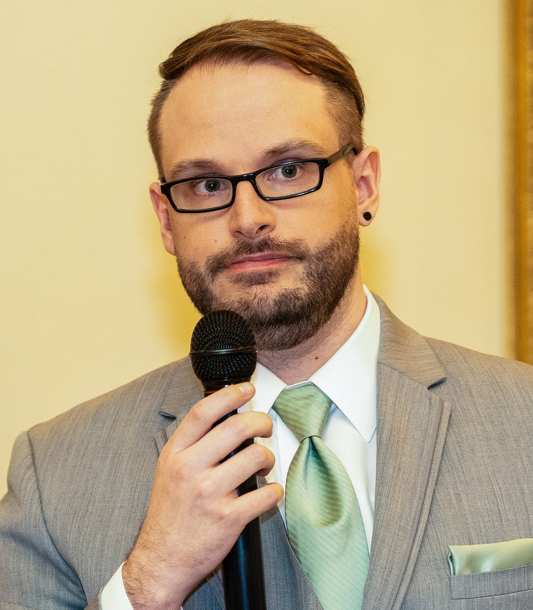

Chase Dedic

Summary
Versatile and multi-disciplined Front-End Developer, UI/UX, and Graphic Designer with an extensive background in creating unique visual and interactive designs that promote brand awareness, increase consumer engagement, and enhance the user experience. Expert at building the bridge between visual and technical designs to align resources and achieve a shared vision. Creative thinker and out-of-the-box problem solver with the fine-tuned ability to conceptualise and produce content that is relevant, relatable, innovative, and on-brand.
Education
Bachelor of Science, Computer Science - Temple University College of Science and Technology (2007-2011)
Work Experience
Freelance Graphic Designer | Remote (Jul. 2017-Present)
Consult with several different clients, companies, and local businesses in designing custom logos, UI/UX designs, and branding designs that are then applied to a range of art mediums/materials for marketing purposes. Examples include:
- Kickstarter Client Project: Designed the branding, logo, and mascot for a Kickstart client who was starting a personal collectible enamel pin business
- Bank Landing Page: Created UI/UX focused landing web page templates for a bank client
- Twitch.tv/YouTube Client Projects: Designed tailored broadcast graphics for various clients, including stream overlays, channel emoticons, branding, and social media materials
Extra Life Annual Charity Live Stream | Bethlehem PA. (Nov. 2014-Present)
Spearhead and manage an annual 24-hour video game charity live stream that raises money for Children's Miracle Network Hospitals every November with a small team of volunteers.
- Designed and developed the the broadcast graphics and dashboards used for the event as well as all audio/visual and motion graphic production
- Raised over $39K across the last ten years of production for the Children’s Hospital of Philadelphia
User Experience Designer | Yocum Technology Group | Remote (May 2023 - Jul 2024)
Worked with multiple clients on a wide breadth of projects. Introduced the importance of UX into client projects and spearheaded multiple app visual and usability redesigns. Primary front-end developer and designer on client app projects.
- Created new and updated UI designs for a client in the surgical industry.
- Lead a complete app redesign for a telecommunications company in Manhattan, NY. Designed and developed a new function for the application using Angular.
- Updated the design and usability of a web application for a finance client.
- Consulted with clients to discuss how to best incorporate UX into projects and to understand the importance of usability in web applications.
UI/UX Designer | Computer Aid. Inc | Allentown PA. (Feb. 2012-Jul 2017)
Promoted after a five-month internship to establish and spearhead the development of the company's first UI/UX design team with a focus to create engaging digital content to improve the overall user experience and drive business growth as well as streamline daily workflow processes.
- Created user-friendly corporate websites utilising DotNetNuke and WordPress to attract clients and increase engagement on a modernised landing page; developed web front-end framework using HTML, CSS, and JavaScript
- Designed multiple promotional graphics, branding, and logos for corporate product offerings to promote brand awareness and services; produced high-quality promotional videos and managed the entire production cycle
- Conducted market research and consulted with consumers/stakeholders to identify specific pain points when using products and devised design process improvements to enhance the user experience
- Revamped and redesigned the company's primary ticketing support system through implementing strategic UI/UX methodologies to improve efficiency and accuracy
- Collaborated with a fellow designer and a team of developers and business analysts in strategizing and delivering web applications across multiple product releases using agile methodologies to ensure a seamless launch
Skills
Design - Graphic & Visual Design | UX/UI | Branding & Logos | Advertising | Social Media Marketing | Web Design | Video Production & Editing | Motion & Broadcast Graphics | Market Research & Forecasting
Technical - Adobe Creative Suite/Photoshop/Illustrator/After Effects/Premeire/Audition | Affinity Suite/Photo/Designer | OBS Studio | Adobe XD | Figma | Balsamiq Mockups | HTML + CSS + JavaScript | Angular | WordPress | DevOps | Git | Agile Methodologies
Leadership - Strategic & Creative Planning | Product Development & Management | Consulting | Stakeholder & Client Management | Relationship Building | Fundraising | Event Planning | Mockups & Reports | Team Management
Awards and Achievements
Extra Life Gold Hero Medal - Every year since 2014 - Medal awarded top charity participants who raise over $1000 for the annual event.
Other
About Me
Contact Me